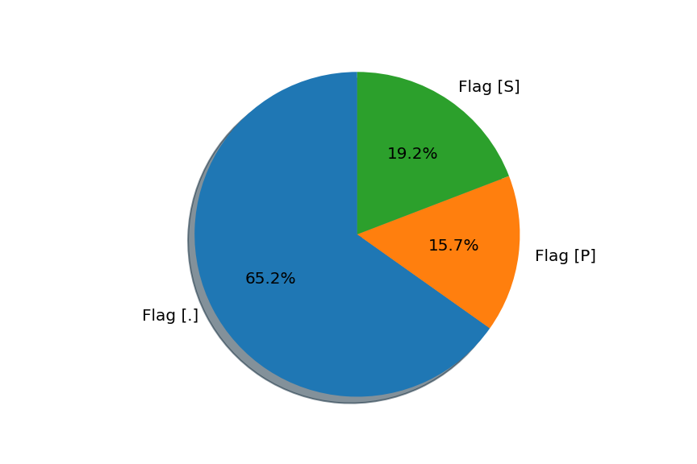

Nombre de flags [S] (SYN) = [2046]
Nombre de flags [.] (ACK) = [6961]

Nombre des requêtes et réponses
Requêtes = [42]Réponses = [42]

Statistiques entre seq, win et ack
Nombre de seq = [8201]Nombre de win = [10766]
Nombre de ack = [8768]